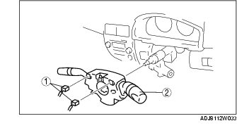

Combination switch removal/installation
1. Disconnect the negative battery cable.
2. Remove the driver-side air bag module. (See DRIVER-SIDE AIR BAG MODULE REMOVAL/INSTALLATION.)
3. Remove the steering wheel. (See STEERING WHEEL AND COLUMN REMOVAL/INSTALLATION.)
4. Remove the column cover. (See COLUMN COVER REMOVAL/INSTALLATION.)
5. Remove the clock spring. (See CLOCK SPRING REMOVAL/INSTALLATION.)
6. Remove in the order indicated in the table.

|
1
|
Connector
(See Connector Removal Note.)
|
|
2
|
Combination switch
|
7. Install in the reverse order of removal.
Connector Removal Note
1. Turn the wiring harness clips installed on the combination switch 90 degrees in the direction indicated by the arrow in the figure and pull them out.

Combination Switch Removal Note
1. Pull the combination switch locks in the direction indicated in the figure and disengage the key cylinder tabs.

2. Pull the combination switch outward, then remove it.
Combination Switch Installation Note
1. Insert the key cylinder protrusions into the combination switch grooves indicated in the figure.

2. Insert the combination switch until the combination switch locks are engaged with the key cylinder tabs.